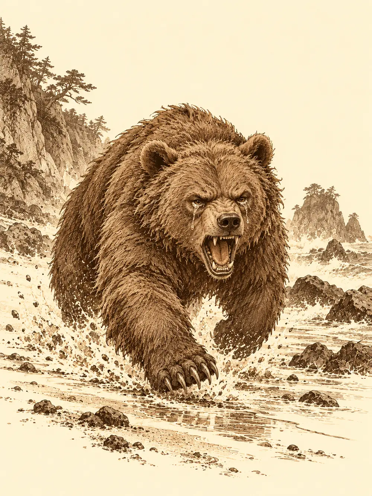

Capítulo 176
La cala de Calista
Libro X · Hasta pronto, Kuroto
La carta seguía clavada en la puerta de la base cuando volvieron, porque nadie se había atrevido a arrancarla. La daga atravesaba el papel y, con él, un mechón de pelo que el viento movía apenas. Jin lo había reconocido la primera vez y no había vuelto a mirarlo.
Habían recorrido Sho y sus alrededores sin descanso. Jin había preguntado en cada esquina, Channi había revoloteado entre tejados sin saber muy bien qué buscaba, Kazuki había dado la voz de alarma en palacio, Arwen había olfateado los caminos hasta perder el rastro y Banzo había corrido de un lado a otro avisando a todos los cazadores que pudo encontrar. De vuelta se les había unido Sun, que venía de entrenar con Serafina. Nadie traía nada nuevo.
El texto lo sabían de memoria. Gordinflón, tengo a la niña. Si queréis volver a verla de una sola pieza, ven en dos días a la cala donde te di esa paliza. Me vas a explicar por qué dejaste escapar al dragón que arrasó nuestra tribu.
Arwen fue la primera en moverse. Se metió sin pedir permiso en la habitación de Jin y empezó a revolver los baúles con la nariz por delante, como un perro que ha perdido la pista y no piensa rendirse. Jin la siguió.
"¿Qué buscas?".
"Algo que huela mucho a Shizuka".
Él se agachó a su lado. Del fondo de un baúl salieron una cinta para el pelo, que la niña descartó, y unos calcetines arrugados que no habían visto agua en muchos días. Arwen los olió con una seriedad absoluta, se los metió en la boca para tener las manos libres y se subió al hombro de Jin. Entonces vio la lágrima que le bajaba por la mejilla.
"Shizuka es la más fuerte de los cazadores", le dijo con los calcetines entre los dientes. "Yo sé que estará bien. Pero es mi amiga. Encontrémosla".
En la sala, Banzo caminaba de un lado a otro como si quisiera abrir surcos en el suelo. Sun intentó razonar con él: si aquel tipo quería algo y tenía algo que ellos querían, quizá bastara con decirle dónde estaba el dragón y dejar que fuera él a buscarlo.
"No sé dónde está Gelbreak", gruñó el goliat. "Se fue y no sé adónde. Y aunque lo supiera, no le diría una palabra. Ese perro no conoce la paz. Siempre ha buscado la sangre". Se detuvo. "Necesito ir yo. Quiero arreglar lo que llevo a la espalda y enfrentarme a mi pasado. Vosotros encargaos de Shizuka".
Kazuki le apoyó la mano en el brazo y le recordó lo que el propio Banzo había dicho semanas atrás: que eran una familia y que la familia se protege. El goliat asintió despacio.
El plan fue torpe y apresurado, pero era un plan. Banzo les advirtió de que su antiguo compañero de tribu ya no era el que recordaba; algo lo había hecho mucho más fuerte. Pidió enfrentarse a él primero. Si no podía, llamaría con el cuerno de su casco, como en la primera oleada. Arwen lo llevaría volando y después se escondería para unirse al rescate, mientras los demás seguían por tierra. Antes de salir, la niña le tocó el pecho y algo le cambió por dentro, una lucidez nueva, como si pudiera notar cada golpe un instante antes de que llegara. El tatuaje de su cuello se encendió en azul y empezó a latir, despacio. Banzo se miró la mano y le tocó el hombro a la niña.
"Yo confío en ti".
Arwen sacó de su enorme mochila un puñado de bichos tostados y los repartió entre todos, porque para aquello había que comer bien.
Juntaron los puños en el centro. Al marcharse, Channi agarró a Jin de la ropa.
"No estés triste, pío. Todo va a salir bien, ¿de acuerdo?".
"Espero que sí. Gracias, Channi".
Arwen se transformó en el patio. Le crecieron plumas, garras y pico, y quedó delante de ellos un grifo pardo con un mechón pelirrojo en la cabeza, del mismo color que su pelo de niña. Banzo montó y el grifo salió hacia la costa.
Desde el aire el camino era fácil: la costa escarpada al norte de Sho, un sendero entre árboles torcidos, una rampa que bajaba hacia una cala escondida. En el centro de la arena había un monolito rodeado de piedras amontonadas y unas cuantas botellas de vino dejadas a lo largo de muchas visitas. Era la tumba de Calista. Junto a ella, sentado como quien espera a un viejo amigo, había una figura tan grande como Banzo, y a su lado otra mucho más pequeña.
El grifo bajó en picado, abrió las alas justo antes del suelo y levantó una nube de arena.
"Vaya", dijo el otro goliat sin levantarse. "Así que ahora Banzo vuela en grifo".
"He aprendido varias cosas desde que salí de esa cárcel".
"¿Es un grifo de verdad o uno de esos amigos tuyos?".
"No son amigos. Se llama familia. Algo que tú no has aprendido todavía".
Bortrack se rio y se puso en pie. Shizuka estaba atada y amordazada a su lado, y el filo de un hacha enorme descansaba a un palmo de su cuello.
"Tú solo tienes ancestros que fueron líderes y asesinos de otras tribus, y en eso te has convertido. Yo vengo a vengar a nuestra gente. Me han contado que dejaste escapar a ese dragón".
"Ese dragón es mucho más de lo que tú llegarás a ser. Tiene un nombre que no vas a saber y una historia que no vas a conocer, porque vas a caer aquí y ahora".
Abrió los brazos. De hombro a hombro empezó a brillar una marca antigua, la que se había hecho al jurar hermandad con Gelbreak, y su luz azul se unió a la de los tatuajes. Banzo acarició el cuello del grifo y le susurró que alejaría al otro de la niña, que rodeara la costa y la sacara de allí antes que nada. El grifo se perdió entre los árboles.
Los dos goliats entraron en furia a la vez. Banzo atacaba retrocediendo, paso a paso, para arrastrar a su rival lejos de Shizuka, y en cada choque recordaba por qué aquel hombre lo había derrotado una vez. Los hachazos le entraban por debajo de la guardia como si no llevara nada encima. De su espalda brotó la figura oscura de una tritón que mordió a Bortrack en el hombro y escupió el bocado en la arena; el otro apenas se inmutó.
En un intercambio de golpes, Banzo logró derribarlo. Se arrancó el cuerno del casco y sopló con todas sus fuerzas, un bramido ronco que rebotó en las rocas y salió hacia el mar.
Por el sendero de la costa lo oyeron. Jin, Sun, Kazuki y Channi echaron a correr entre piedras y matorrales, Jin con la armadura sonando a cada zancada, la pequeña criatura de pico y hojas aleteando para no quedarse atrás. Arwen, otra vez niña, esperaba escondida en la linde del bosque.
Llegaron a tiempo para verlo. Banzo estaba de rodillas. Bortrack levantó el hacha y la bajó en un solo movimiento, y cuando se irguió sostenía por el pelo la cabeza de su antiguo compañero, en alto, como un trofeo.
Arwen salió del bosque corriendo y, mientras corría, se hizo grande y pesada, el oso pardo que más quería, y cargó llorando contra el asesino de su mejor amigo. Sun se lanzó a su mandíbula con toda la rabia que tenía. Channi derramó luz y curación sobre los que sangraban. Delante de Jin se abrió un corte en el aire, una puerta que Kazuki había rasgado para él, y el noble se interpuso después entre el enemigo y la niña, aguantando golpes que lo dejaban sin aliento. Jin solo pensaba en su hija.

Bortrack resistía mordiscos, puñetazos y magia, y cuando devolvía los golpes devolvía muertes. El oso se le enganchó a un brazo y aun así Arwen encontró un instante para mandar una palabra de curación a Channi, que estaba casi sin plumas. El hacha cayó después sobre ella con tanta fuerza que la forma del animal se deshizo. En medio de aquello, Kazuki llegó hasta Shizuka, la tocó, y la niña desapareció de la vista.
Banzo estaba en otra parte.
Había una casa en mitad de la nieve, y él sabía, con la certeza absurda de los sueños, que sus compañeros estaban dentro. Abrió la puerta y no había nadie: telarañas, polvo, el frío de un lugar abandonado hacía años. Retrocedió, salió y, al cruzar el umbral, ya no pisaba nieve sino las calles de Sho.
Era Sho y no lo era. La gente reía. Había yokai compartiendo puestos de mercado con humanos, bebiendo en las mismas mesas. Al fondo se alzaba un templo que nunca había estado allí. Entró. En los muros había relieves de cazadores antiguos y de batallas que conocía y de otras que no. Vio a Aka. Vio a Gur. Vio a gente que había luchado por Kuroto entre el caos y las malas decisiones, y entendió que todo aquello había desembocado en esa felicidad tranquila. Se le escapó una sonrisa y, con ella, las lágrimas.
Entre la multitud distinguió una figura de piel pálida y capucha. Pensó en otro hermano y se acercó con el corazón en la garganta. La figura se volvió. Tenía el rostro de Danifae y le sonreía, pero los ojos no eran los suyos.
"Goliat, goliat, goliat", le susurró al oído, mientras él, ya sin rencor, la abrazaba. "Tú y yo hicimos un trato. De momento no vas a morir hasta que yo te lo diga. Aún tienes algo que hacer por mí".
En la playa, los demás vieron moverse algo junto al cuerpo. Eran arañas pequeñas, decenas, que salieron de ninguna parte y empezaron a juntar la cabeza con el cuello y a coserla con hilos finos, como una vez habían hecho con Danifae. El cuerpo de Banzo se estremeció y se puso en pie.
Lo primero que vio al abrir los ojos fue a su familia sangrando en la arena. Le subió desde el estómago una furia que no había sentido nunca. Venía de algo que detestaba, y aun así iba a usarla entera.
Gritó y echó a correr. Jin se agachó para que le pisara la espalda como un trampolín. Sun golpeó el suelo con el bastón y detrás de Bortrack apareció otro mono idéntico a él; el enemigo giró la cabeza un instante. Channi soltó un estallido de aire que empujó al goliat más alto. Arwen hizo brotar raíces bajo los pies del rival. Kazuki alzó la mano y sobre el pecho de Banzo se dibujó el símbolo de los cazadores, que creció hasta volverse un escudo de luz.
El hacha se hundió en el cuerpo de Bortrack y lo derribó, y Banzo cayó encima con todo su peso. No la arrancó: era el clavo que lo sujetaba al suelo. Lo golpeó con los puños una y otra vez sin hacerle nada. Entonces recordó lo que hacía su amiga. Le agarró la cara, del otro lado de su cuello surgió la boca de la tritón oscura, y entre los dos se la arrancaron entera. Bortrack estalló en una nube de polvo y ceniza.
Banzo se volvió llorando y los abrazó a todos, los levantó a la vez del suelo sin esfuerzo.
"Pensaba que os había perdido. Sois mi familia. Sois lo que me ha mantenido aquí".
"Pensaba que había perdido otro amigo", lloraba Arwen colgada de su cuello.
Ella y Kazuki vieron las telarañas finísimas que le recorrían el cuello y se miraron. La niña olió la costura con mucha atención. Olía a Banzo, y eso bastó. El goliat le contaba a Kazuki que lo que había visto al otro lado era lo más hermoso de su vida, y que ya no le quedaba ninguna duda de que estaban haciendo lo correcto.
"Ya te lo dije", sonrió el noble. "Somos los nuevos guardianes".
Jin fue deshaciendo a tientas las cuerdas de Shizuka hasta que el hechizo se rompió y la niña volvió a verse. Le quitó la mordaza con las manos temblando. Ella le dio un golpe en la cabeza.
"¿Por qué habéis tardado tanto?".
"Esa es mi niña".
Se le echó al cuello con tanta fuerza que lo dejó sin aire. Después fue derecha al montón de ceniza que había sido su secuestrador y lo pateó con una colección de insultos que su padre prefirió no corregir.
Banzo los llevó junto al monolito y sirvió sake en varias copas.
"Te lo dije, pequeña", le habló a la piedra. "La familia es muy grande y pase lo que pase vamos a estar aquí". Se tocó los hilos del cuello. "Sé que me queda algo pendiente. Ahora estoy más unido que nunca a lo que más odio. Pero con ellos al lado no hay nada que temer". Se volvió hacia los demás. "Aquí está Calista".
Kazuki derramó media copa en la arena y le dijo a la tritón que el concilio entre nobles y cazadores avanzaba, que las mareas lo llevarían a buen puerto. Sun no bebía; alzó la copa y vertió el sake sobre la piedra. Shizuka dejó su espada de madera junto a la tumba, por todos los cuentos que les contaba a Arwen y a ella. Channi se sentó en la arena.
"Me caías bien, pío. Mujer azul muy amable. Gracias por salvarme de aquellos hombres groseros".
Jin arrancó una hoja de su cuaderno y la sujetó con una piedra. Era un dibujo infantil, un hombre con una espada, como un héroe de cuento.
"Es de lo poco que me queda de mi hermano. Espero que os cuidéis en el más allá".
Banzo se apartó hacia la orilla, desde donde se veía el mar por el que se había marchado Gelbreak, levantó la copa al cielo y prometió que aún le quedaba hacer feliz a aquel gruñón, que lo encontraría y que aquello no acababa allí. Arwen dejó una poción junto a la piedra.
"Hasta más ver. Cuando vuelvas al ciclo, si aún estoy por aquí, cuéntame otra vez un cuento".
Banzo volvió a poner el puño en el centro.
"Nos queda un guardián, un campamento y Otakemaru. Y la felicidad de Kuroto. Vamos a por ello".
Alguno juró que no estaba llorando y que no le había afectado nada ver la cabeza de su amigo volar por los aires. El goliat pidió que no contaran ese detalle en las historias, porque no quedaba bien, y cuando le preguntaron en broma cómo había conseguido volver, se le nubló la mirada un instante. Tenía una deuda con alguien a quien había creído no volver a ver, atada con hilos de verdad. Luego le puso la mano en el hombro a Kazuki.
"Deberíamos volver a casa, ¿no crees?".
"A casa. Qué ganas tenía de oír eso".
Del hacha de Bortrack no quedaba nada; se había deshecho con él. Detrás de una roca, las tres niñas probaban a escondidas una botella de vino robada con la punta de la lengua, y junto al monolito de Calista la espada de madera esperaba a que subiera la marea.